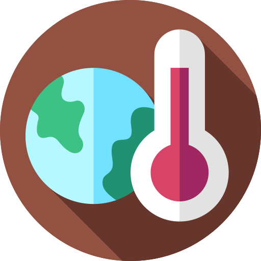

 지구온난화
ASIA
EUROPE
AMERICA
OCEANIA
AFRICA
투발루는 환경 오염을 많이 유발하는 국가가 아니다. 지구 온난화의 영향을 받고 또 다른 환경 문제가 많은 나라이다.
지표수가 부족하여 식수의 부족, 연료를 얻기 위한 산림벌채, 그리고 지구 온난화의 영향으로 해수면의 상승하여 국토가 침수되는 문제가 있다.
투발루는 기후 변화로 희생되는 첫 번째의 나라가 될 확률이 높다.